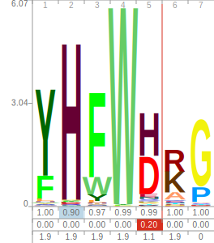

Proteins are a linear polymer comprised of 20 possible amino acids that can be represented as a string
Proteins fold into a defined structure, based on the chemical properties of the amino acids, that can be represented by Cartesian coordinates for every atom
Pairwise Comparison
Multiple sequence alignment
Hidden markov model sequence profiles

Conti, Elferich et al. 2014
Li, Sun, Elferich et al. JBC 2014
Li, Sun, Elferich et al. JBC 2014
Elferich et al. FASEB 2013